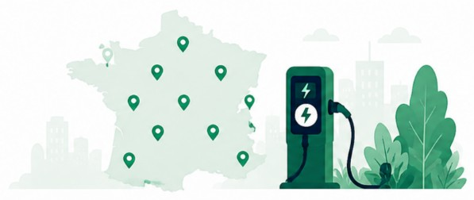

Bienvenue sur LEF IRVE
Explorez et analysez le déploiement des infrastructures de recharge pour véhicules électriques (IRVE) en France. Visualisez les données par département, suivez l'évolution des stations et identifiez les zones les mieux équipées sur le territoire.

Station de recharge
---
Points de charge
---
Département le mieux équipé
---
À propos
Ce projet a été réalisé dans le cadre du cursus Big Data, IA & Web à l'ISEN. Il vise à exploiter les données ouvertes sur les infrastructures de recharge pour véhicules électriques (IRVE) publiées par data.gouv.fr. L'objectif est de proposer des visualisations claires et interactives pour mieux comprendre le déploiement territorial des bornes de recharge en France métropolitaine.